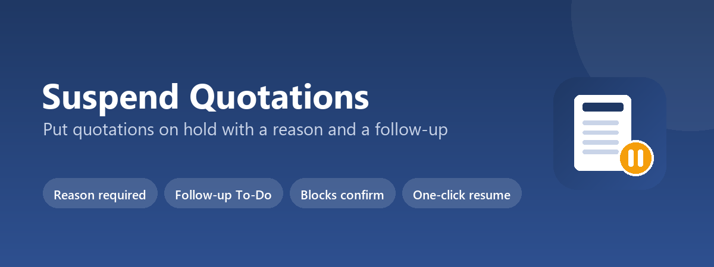

Park a quotation with a reason and a follow-up date; it cannot be confirmed or emailed until someone resumes it.
Waiting for artwork, a credit check or an answer from the customer? Click Suspend, say why and choose when to follow up. The quotation stays out of the normal flow, a To-Do reminds you on the chosen date, and Resume puts it back where it was.
⏸️ Suspend with a reasonGive the reason and a follow-up date, and a To-Do is scheduled for you on that date. |
🚫 Out of the flowA suspended quotation cannot be confirmed or emailed, and the customer cannot sign or pay it on the portal. |
▶️ Resume in one clickResume puts the quotation back in the normal flow and closes the follow-up. |
🔔 Customer warningOther quotations for the same customer show which of their quotations are on hold, as links you can open. |
📋 Suspended Quotations listA menu in the Sales app lists every quotation on hold, and the quotation search has a Suspended filter. |
📅 Default follow-upSet in the Sales settings how many days ahead the follow-up date is proposed. |
Odoo 18.0 • Community & Enterprise • depends on Sales • Licence LGPL-3
Odoo implementation and development. thecodelegion.com